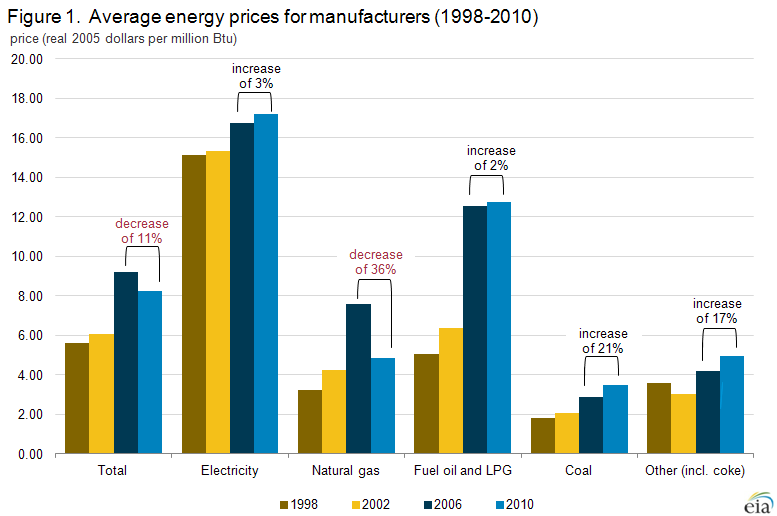

Manufacturing Energy Consumption Survey (MECS)
Features
Other End Use Surveys
DOE Uses MECS Data
Manufacturing Energy and Carbon Footprints

Associated Analysis
Manufacturing Energy Sankey Diagrams
Manufacturing Energy Flows Tool
Cost of Natural Gas Used in Manufacturing Sector Has Fallen
MECS 2010 — Release date: September 6, 2013
Natural gas has been an important exception to the trend of rising prices for energy sources used by manufacturers. Production of natural gas in the United States increased rapidly beginning in 2007 as a result of resources found in shale formations. That increase in supply has in turn lowered the price of natural gas to manufacturers as well as other consumers.
The 36% decrease in the average natural gas price paid by manufacturers between 2006 and 2010, from $7.59 to $4.83 per million Btu, was large enough1 that the total cost of energy from all sources fell by 11% between 2006 and 2010, from $9.19 to $8.22 per million Btu (in 2005 dollars), according to data from the 2010 Manufacturing Energy Consumption Survey (MECS). Since that survey was conducted, natural gas prices have fallen further2.
Unlike commercial, residential, and other types of consumers, many manufacturers have the ability to meet a large portion of their energy needs through the use of non-purchased energy sources, including the on-site combustion of waste or byproducts. As much as 28% of the total energy consumed in manufacturing in 2010 came from non-purchased sources.3 figure data Similarly, many manufacturers can freely substitute one purchased energy source for another in a relatively short time. For example, in 2006, manufacturers could have substituted other fuels for 17% of their natural gas.
{kind=link}
The ability to switch among fuels varies widely across the manufacturing sector. Nitrogenous fertilizer manufacturers are able to substitute for less than 1% of their natural gas use, while makers of plastics and rubber products manufactures can switch nearly 40% of theirs.4 Even with their considerable flexibility to switch fuels, manufacturers experienced an increase of more than 50% in their overall unit cost of purchased energy from 2002 to 2006 (Figure 1)5. Energy prices during that period increased for all energy sources, but the greatest increases were for natural gas and oil products.6 In fact, from 1998 to 2006, energy prices for all widely-used energy sources measured by the MECS rose consistently, although not as steeply as the rise between 2002 and 2006.
Manufacturers' energy expenditures rose 29% between 2002 and 2006 even as the amount of energy purchased dropped 15% (see Figure 2).
In contrast, from 2006 to 2010 manufacturers' energy expenditures decreased 16%, even though the amount of energy they purchased fell only 6%.
 figure data
The figure also shows general consistency between prices reported by suppliers of industrial customers in EIA's Annual Energy Review (AER)7 and MECS consumers, indicating that the rise in prices peaked in 2008 before falling in 2009. The generally rising energy prices through 2008 motivated manufacturers to reduce their energy purchases.
figure data
The figure also shows general consistency between prices reported by suppliers of industrial customers in EIA's Annual Energy Review (AER)7 and MECS consumers, indicating that the rise in prices peaked in 2008 before falling in 2009. The generally rising energy prices through 2008 motivated manufacturers to reduce their energy purchases.
There is anecdotal evidence that manufacturers are starting to react to lower natural gas prices by planning to open new facilities in the United States. There are other influential factors, including rising employment costs overseas, but those industries for which natural gas is an important input are anticipating an advantage of locating their operations here.8
Reasons for price differences
Given their large volumes of energy purchases, greater flexibility in shifting among fuels, and greater freedom in choosing among alternative suppliers, by manufacturers have generally been more tightly linked to changes in wholesale energy markets than residential or commercial customers. For example, manufacturers have generally had the ability to negotiate their own arrangements for supply and transportation of natural gas because interstate natural gas pipelines were able to open access to large users of natural gas in 1985. Although bypassing the local distribution company's (LDC) delivery pipelines is allowed under the regulations, most manufacturers find it more economical to use the LDC's distribution system while purchasing other services such as supply and transportation separately. Manufacturers often work with natural gas marketers who will bundle services for groups of consumers.
Table 1 shows 2010 manufacturer's prices for natural gas broken out by utility (or LDC) and nonutility purchase and by Census region. Manufacturers in 2010 purchased approximately 68% of their natural gas from non-utilities. However, the resultant price differences are similar to those observed in the MECS since 1994 when data by source differences were first collected. In all regions, the utility price is higher than the nonutility price. However, even more influential is the region of the country in which the manufacturing establishment is located. Prices are highest in the Northeast and lowest in the South, regardless of the source of purchase. The difference may result from a combination of establishments being closer to a source of natural gas in the South or the greater prevalence of high-volume users in that region. This situation may change with the development of natural gas resources in the Marcellus Shale of Pennsylvania, which has largely occurred since 2010.
Table 1: Prices of natural gas incurred by manufacturers, 2010, by region and source of purchase
(dollars per thousand cubic feet)
| Region | Utility or LDC | Non-utility | Total from all sources |
|---|---|---|---|
| Northeast | 7.23 | 7.13 | 7.17 |
| Midwest | 6.02 | 5.51 | 5.70 |
| South | 5.65 | 4.91 | 5.15 |
| West | 6.22 | 5.41 | 5.66 |
| Unted States | 5.98 | 5.28 | 5.51 |
| LDC = local distribution system (natural gas) Source: MECS 2010, http://www.eia.gov/consumption/manufacturing/data/2010/xls/Table7_3.xls |
|||
Another significant factor in differing prices may be the size of the establishment purchasing the gas. Table 2 shows natural gas prices by employment size category and region. Again, region is the dominant factor in determining the price. However, larger establishments tend to pay less for their natural gas because they usually purchase larger volumes. Their purchasing power can give them strength in negotiating, even with a utility or LDC.
Table 2: Natural gas prices incurred by manufacturers, 2010, by region and
establishment employment size
(dollars per thousand cubic feet)
| Employment Size | Northeast | Midwest | South | West | Unted States |
|---|---|---|---|---|---|
| Under 50 | 8.21 | 5.50 | 5.62 | 6.47 | 5.88 |
| 50-99 | 7.88 | 5.74 | 5.57 | 5.87 | 5.90 |
| 100-249 | 7.33 | 5.97 | 5.18 | 5.85 | 5.63 |
| 250-499 | 7.03 | 5.91 | 5.13 | 5.43 | 5.46 |
| 500-999 | 6.62 | 5.62 | 4.99 | 5.28 | 5.28 |
| 1,000 and over | 6.61 | 5.48 | 4.99 | 5.54 | 5.28 |
| Total | 7.17 | 5.70 | 5.15 | 5.66 | 5.51 |
| Source: MECS 2010, http://www.eia.gov/consumption/manufacturing/data/2010/xls/Table7_4.xls | |||||
Footnotes:
1Natural gas accounts for 40% of total purchased energy when all sources are converted to Btu.
2http://www.eia.gov/dnav/ng/ng_pri_sum_dcu_nus_a.htm
32010 MECS Total Purchased Quantities (Table 7.2) (13,570 tBtu) as a percentage of Total in Table 1.2 (18,817 tBtu).
42006 MECS, Capability to Switch from Natural Gas to Alternative Energy (quantities) (Table 10.2). Fuel Switching capability excludes consideration of nonfuel (feedstock) use. However, other references to purchased energy in the article do not distinguish between fuel and nonfuel use.
5The values in this figure are derived by dividing the price in the MECS table in nominal dollars by the appropriate factor found in AER Table D.1. Example: The average price for all purchased energy in 2010 was $9.12, found in 2010 MECS Table 7.2. That quantity was divided by the 2010 price deflator found in AER Table D.1
(1.10992) to arrive at $8.22, rounded to the nearest cent. All other estimates shown in Figure 1 were computed similarly.
6Includes distillate fuel oil, residual fuel oil, and LPG.
7AER industrial prices also include prices for agriculture, mining, and construction as well as for manufacturing.
8Coming home: A growing number of American companies are moving their manufacturing back to the United States, The Economist, http://www.economist.com/news/special-report/21569570-growing-number-american-companies-are-moving-their-manufacturing-back-united (January 19, 2003).